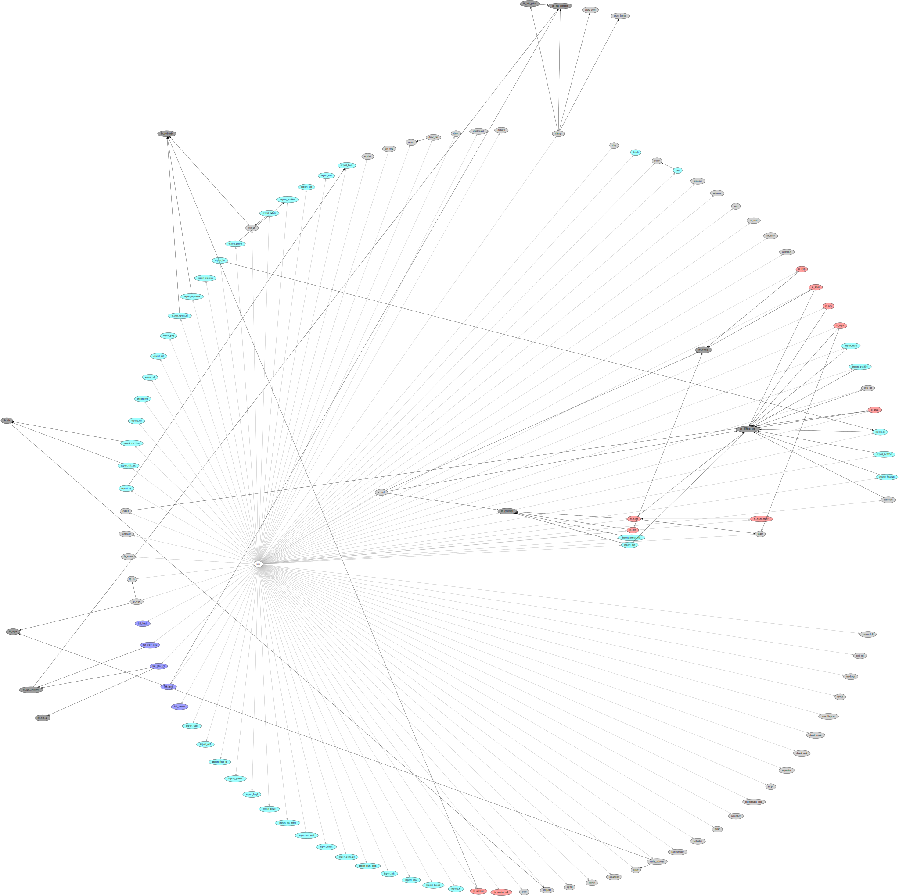

Each plugin implements a class (rarely a set of classes). Classes are:
| name | description |
|---|---|
| feature | random features directly accessible for the user, usually actions |
| lib | support code library for other plugins (core doesn't depend on these); functionality not directly accessible for the user but other plugins may depend on it |
| hid | Human Interface Device: interactive user interface, usually GUI |
| import | load alien formats into the design space |
| export | save (parts of) the design space in alien formats |
| fp | footprint (element) library implementation |
| io | native file format (save & load) implementation |
Common status column values mean:
| name | description |
|---|---|
| works | production quality code - configures, compiles, tested |
| WIP | work in progress: the plugin may be avaialble for testing but is not yet production quality |
| abandoned | unmaintained plugin; may be in working condition but there is no developer supporting it |
| deprecated | legacy plugin scheduled for removal; may still work but will soon be removed; if your workflow depends on it, please report ASAP |
